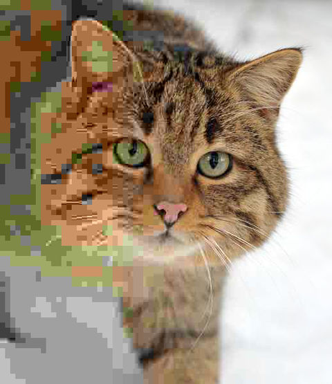
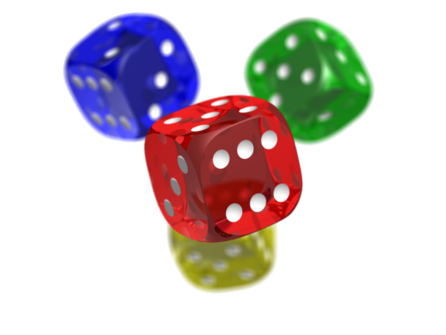
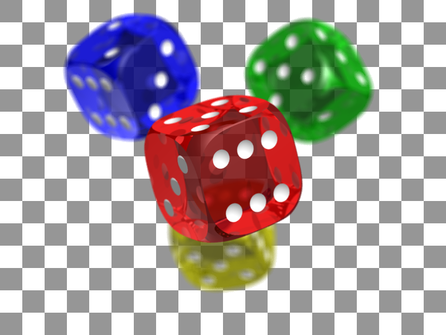
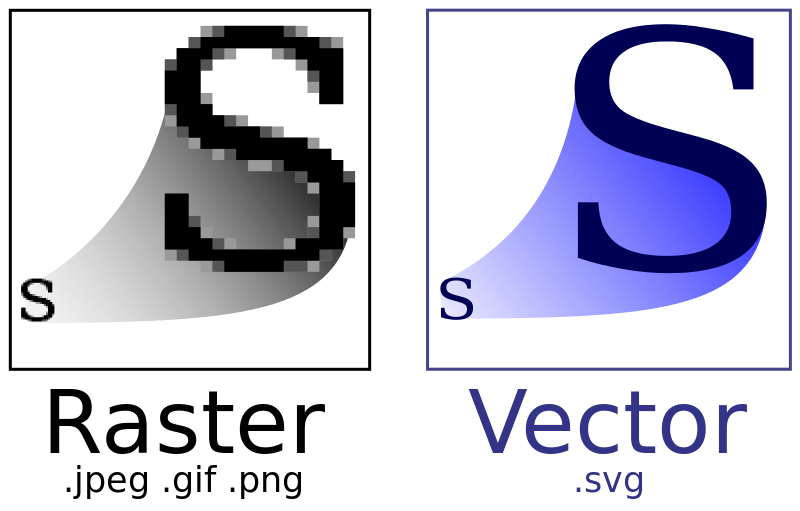

JPG
JPEG (ofte forkortet til JPG) er et elektronisk bildeformat utviklet av Joint Photographic Experts Group. Dette bildeformatet bruker en komprimeringsmetode med kvalitetstap, men til gjengjeld blir filene oftest mye mindre enn ved bruk av bildeformater som bruker komprimeringsmetoder uten kvalitetstap. Dette formatet blir derfor ofte brukt ved lagring av digitale fotografier, spesielt fotografier til bruk på Internett.
PNG
 Portable Network Graphics (PNG) er et bildeformat uten kvalitetstap, som ble laget for å være en erstatning for GIF uten å kreve eller forutsette en patentlisens. PNG-formatet har likheter med GIF-formatet, men i motsetning til GIF er ikke PNG-formatet begrenset til 256 farger for hvert bilde. Hver piksel i et PNG-bilde kan i tillegg inneholde grader av gjennomsiktighet (engelsk: alpha transparency), altså en blanding av farge og gjennomsiktighet. PNG-formatet brukes best til bilder som har store felter med helt lik farge, slik som mye av grafikken på websider har
GIF

GIF (Graphics Interchange Format) er et 8-bit-per-piksel bitmap-billedformat som brukes for å lagre bilder. Formatet bruker en palett med opptil 256 forskjellige farger fra 24-bit RGB-fargerommet. Formatet ble introdusert av CompuServe i 1987 og har siden blitt brukt i stor utstrekning på World Wide Web på grunn av at formatet er vidt støttet og er lett å porte. Formatet støtter også animasjon og tillater dessuten separate paletter på 256 farger for hvert bilde. Et GIF-bilde bruker tapsfri komprimering slik at filstørrelsen til et bilde kan reduseres uten å endre den visuelle kvaliteten, så lenge bildet kan vises med maksimalt 256 farger Formatet er passende for enkle bilder som grafikk eller logoer.
BMP
Windows Bitmap eller Bitmap Image er et filformat for lagring av digitale bilder, spesielt brukt i Microsoft Windows og OS/2. Det norske navnet er punktgrafikk. Formatet støtter flere fargedybder (bits per piksel): Monokrom punktgrafikk (1-bits), 16-fargers punktgrafikk (4-bits), 256-fargers punktgrafikk (8-bits), 65 536-fargers punktgrafikk (16-bits) og 16,7 millioner-fargers punktgrafikk (24-bits). 8-bits punktgrafikk er perfekt for bilder i gråskala. I tillegg til fargedybdene nevnt over, finnes det en fargedybde til som nesten ikke støttes av noen programmer. 32-bits punktgrafikk brukes av Windows XP til f.eks. bildet på startknappen. Om slike filer åpnes av Paint, blir alle gjennomsiktige eller halvveis gjennomsiktige piksler gjort ugjennomsiktige. Dette virker ikke godt når bildet har skygge. Paint kan hverken lagre dette formatet eller 16-bits punktgrafikkSVG
Scalable Vector Graphics (SVG) er et XML-basert filformat for markeringsspråk som beskriver todimensjonal vektorgrafikk.